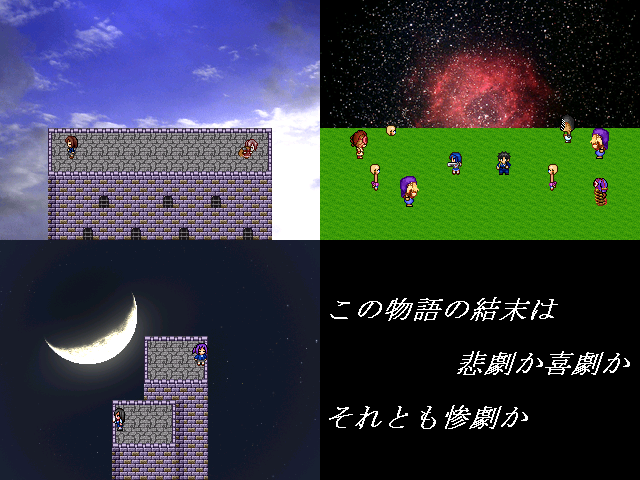

| << Back | 非表示 | 非表示 |
| No.34 - ★包丁とデュラハン |

| 本体ダウンロード(26.9MB) / BBS / 投票 / 提出済 | |
| 作者：名無しについて | 使用ツール：2000 |
| ジャンル：(作者の)過去を振り返る短編集 | 配信/投稿：その為に作られた/してくれなきゃすねるぞ！！ |
| 作者コメント： 嗚呼、もはや何も言うまい、 黒歴史な設定語りましょう 後悔しようが語りましょう 我はこの物語を紡ぐために 我はパソコン使ってただ紡ぐ ---------------- ストーン 「こっそり聞いた話だが・・・ 今回の作品には オープニング音合わせがあるらしい そしてその音合わせに 『ルズ』氏書き下ろしの イラストがあるらしい | |
| 管理人コメント： 包丁！包丁じゃないか！ | |
| 更新履歴： 2014/1/14 本体修正 2013/12/22 提出 2013/12/2 登録 | |